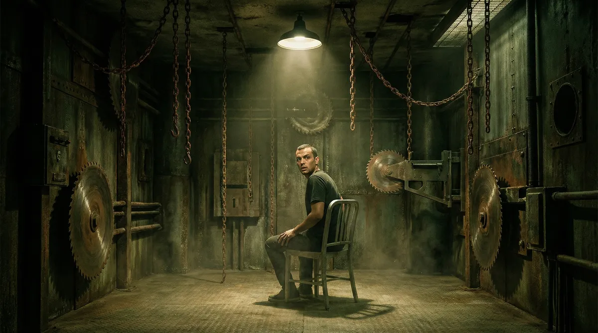
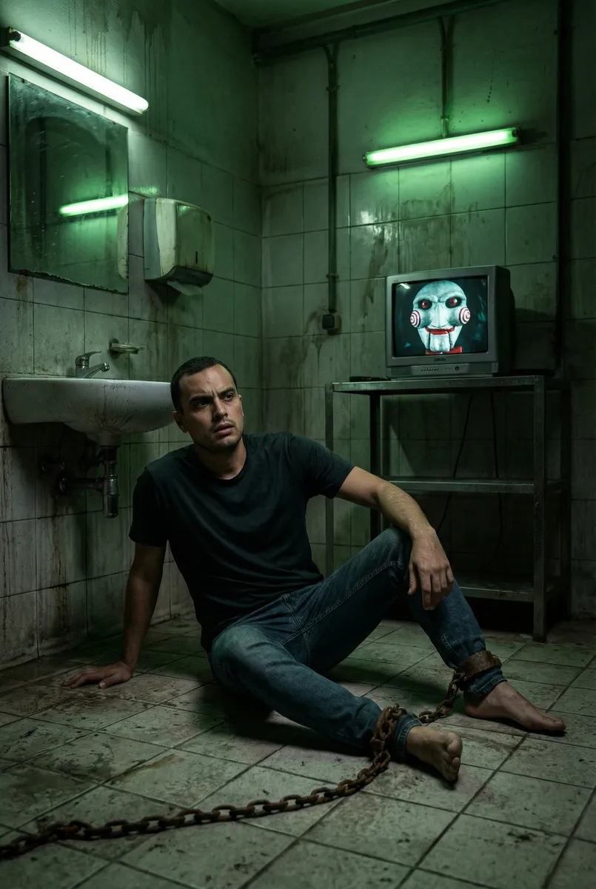
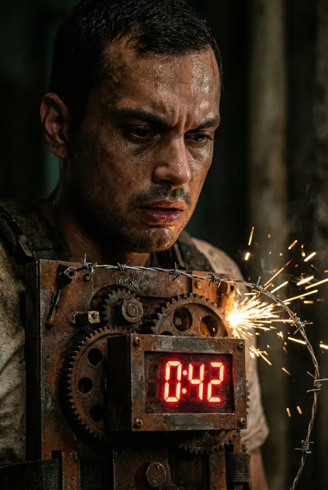
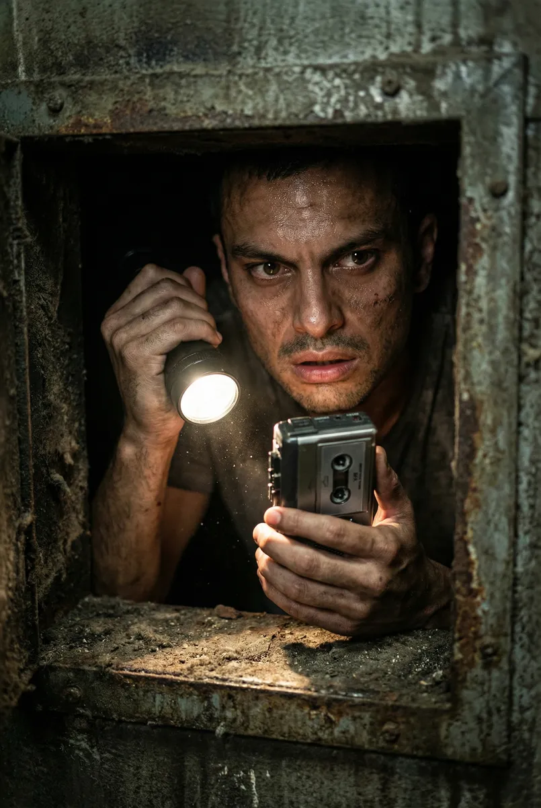
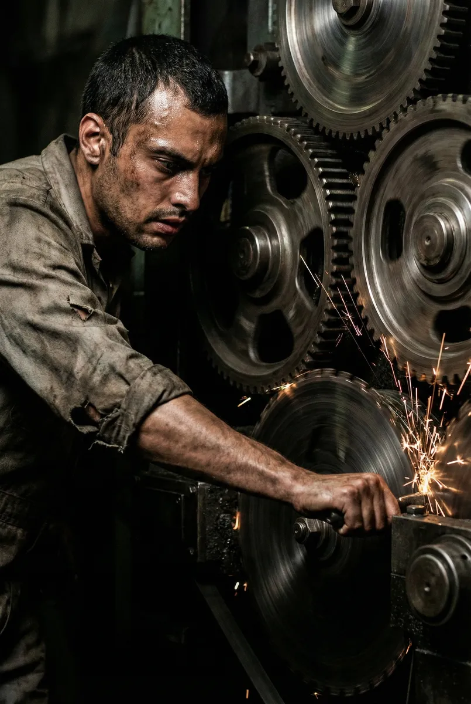
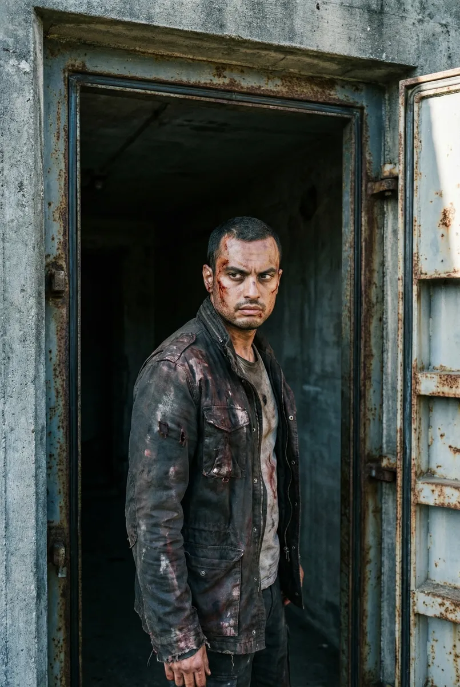

O Legado de Sangue: O Teste Final de Ricardo

Protagonizado por Ricardo
Capítulo 1
Ricardo desperta com o som de estática. O ar é pesado, com cheiro de ferro e umidade. À sua frente, uma televisão antiga liga-se subitamente, revelando o rosto pálido e as bochechas espiraladas de Billy o Boneco. 'Olá, Ricardo. Você passou a vida observando as sombras, agora se tornará parte delas. Quero jogar um jogo.'
Prompt: Realistic photography, Ricardo waking up in a grimy industrial bathroom, dim green lighting, heavy chains on his ankles, flickering TV screen with Billy the Puppet, 8k, cinematic lighting.

Capítulo 2
Preso a um mecanismo hidráulico que aperta seu tórax a cada segundo, Ricardo vê um cronômetro digital em contagem regressiva. Para se libertar, ele deve alcançar uma chave presa no fundo de um recipiente repleto de arame farpado eletrificado. A dor é o preço da liberdade, e o tempo está acabando.
Prompt: Close-up of a mechanical chest trap on Ricardo, rusty metal, digital timer glowing red in the dark, sparks from electrified barbed wire, realistic horror aesthetic, sweat and grit.

Capítulo 3
Com as mãos sangrando mas a chave em posse, Ricardo rasteja por um duto de ventilação estreito. Ele encontra um gravador de fita cassete com seu nome. A voz rouca de John Kramer ecoa, questionando Ricardo sobre as chances que ele desperdiçou na vida. Cada palavra parece pesar mais que as correntes que o prendiam.
Prompt: Ricardo in a narrow, dirty ventilation shaft, holding a microcassette recorder, single light source from his flashlight, hyper-realistic texture of dust and rust, intense facial expression.

Capítulo 4
O teste final exige um sacrifício supremo. Ricardo entra em uma sala repleta de engrenagens colossais e lâminas circulares em movimento. Ele precisa inserir seu braço em um mecanismo para destravar a saída, provando que sua vontade de viver é maior que seu medo da mutilação. O metal range enquanto as lâminas se aproximam.
Prompt: Ricardo reaching into a complex machine of massive rotating gears and sharp circular blades, sparks flying, intense shadows, cinematic composition, gritty realistic texture, 16:9.

Capítulo 5
As portas de aço se abrem com um estrondo. Ricardo, marcado pelas cicatrizes do jogo mas com um novo brilho de determinação nos olhos, emerge para a luz fria do amanhecer. Atrás dele, a porta se fecha e a voz final sussurra: 'Viver ou morrer, Ricardo. A escolha foi feita.' Ele agora entende o valor de cada respiração.
Prompt: Ricardo standing at the exit of a dark industrial bunker, cold morning light streaming through a heavy steel door, bloodied clothes, looking back with a somber but determined gaze, cinematic wide shot, realistic style.
